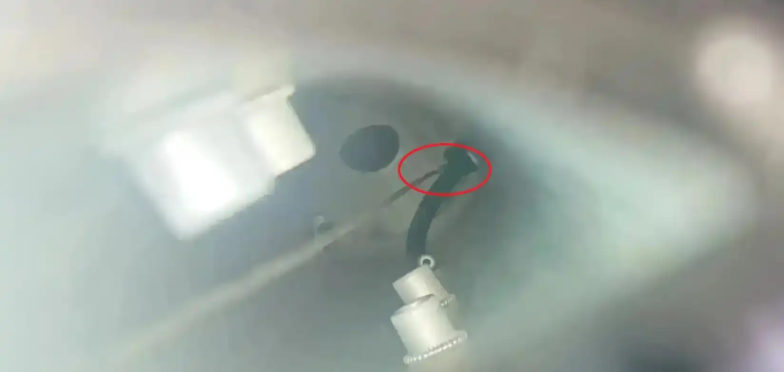
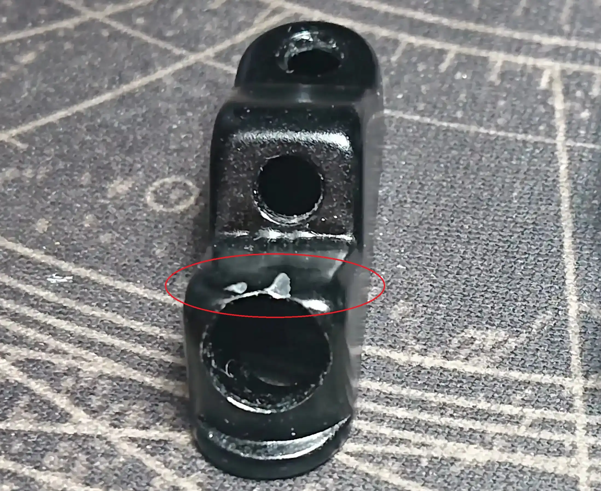
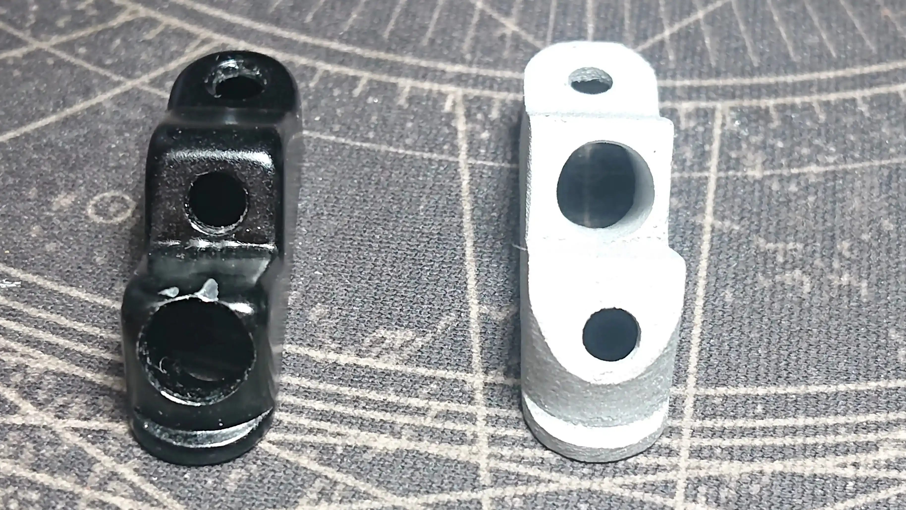
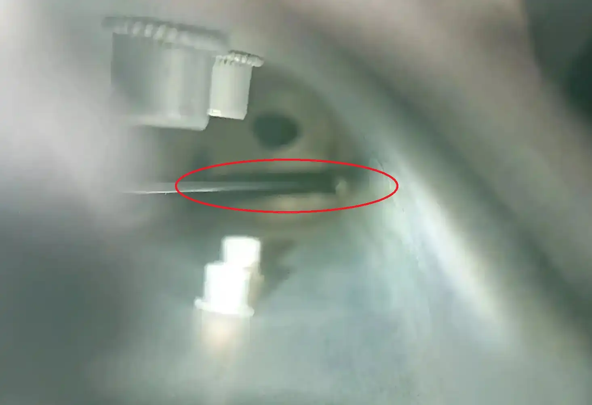
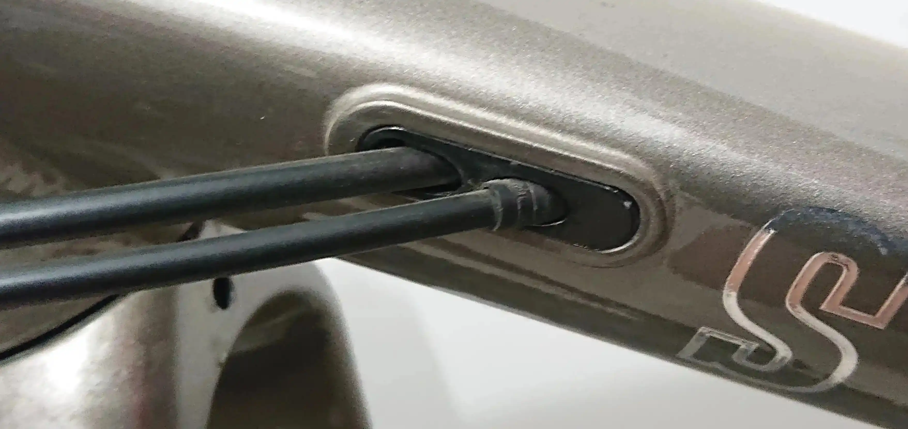

云岸GR02过线座线管干涉问题 - 捣鼓单车
前段时间组装云岸GR02车架，穿线管油管时发现车身过线座上的变速拉线与过线座会干涉，在调整变速的几天已经出现磨损过线座的问题。可以使用2mm六方拆下螺丝，检查是否出现类似问题。文末有3d打印文件分享。

磨损的过线座
不管拉线在油管上侧，下侧都能磨出凹痕。

解决方法
原装的过线座变速线是在靠近头管方向的，在油管前方，才出现这种情况。

我调整线管油管方向重新画了一个座，解决此问题。

装车效果图
3d打印文件
穿线扣3d打印文件
数据尺寸是根据带漆的零件测量的，打印完成后如果需要喷漆上色，需要打磨多一些。
我手上还有四个多余的铝合金成品，有需要的可以联系我。出完不在提供，打印铝合金真是太贵了。